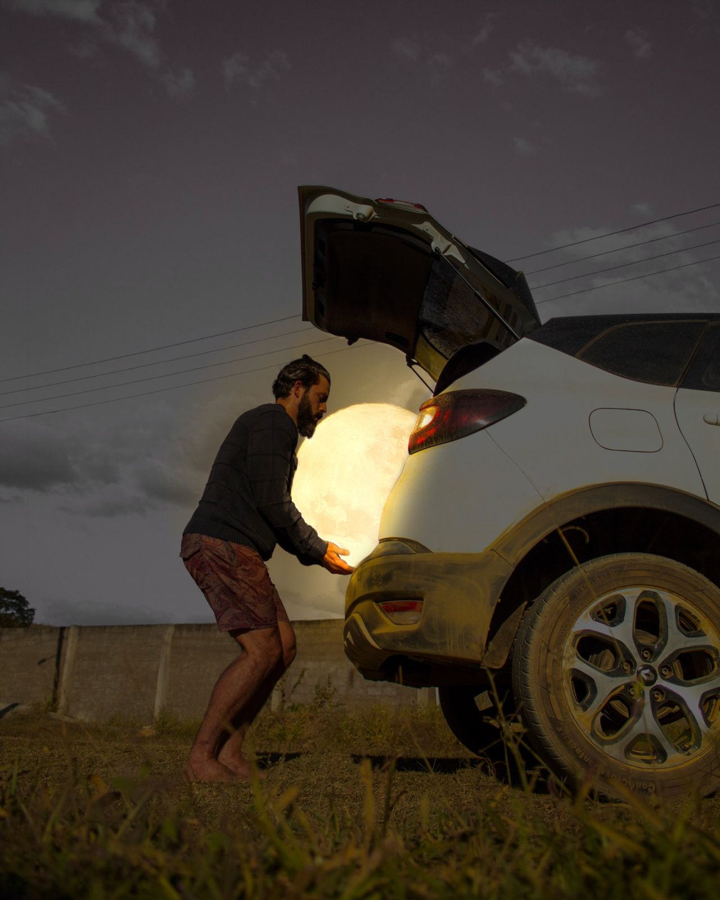
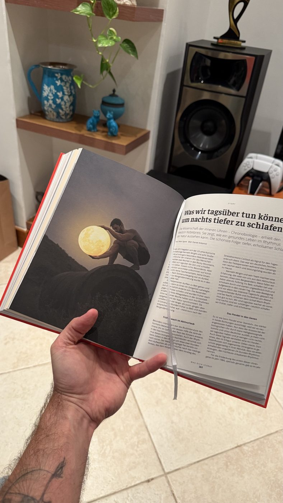
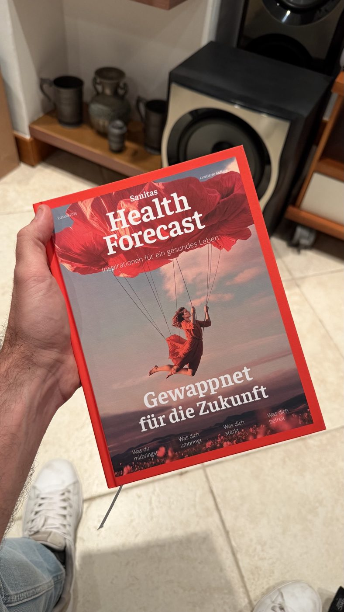
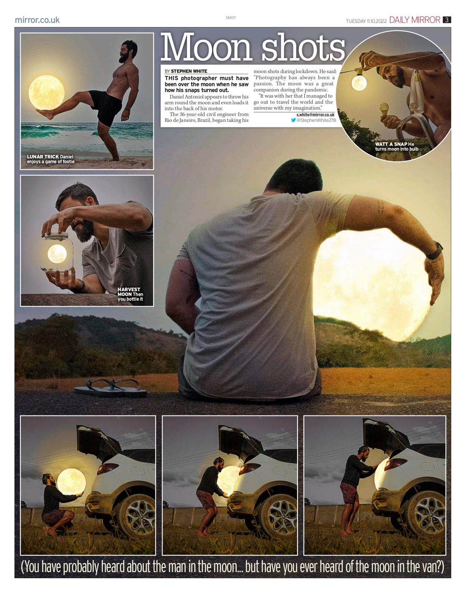
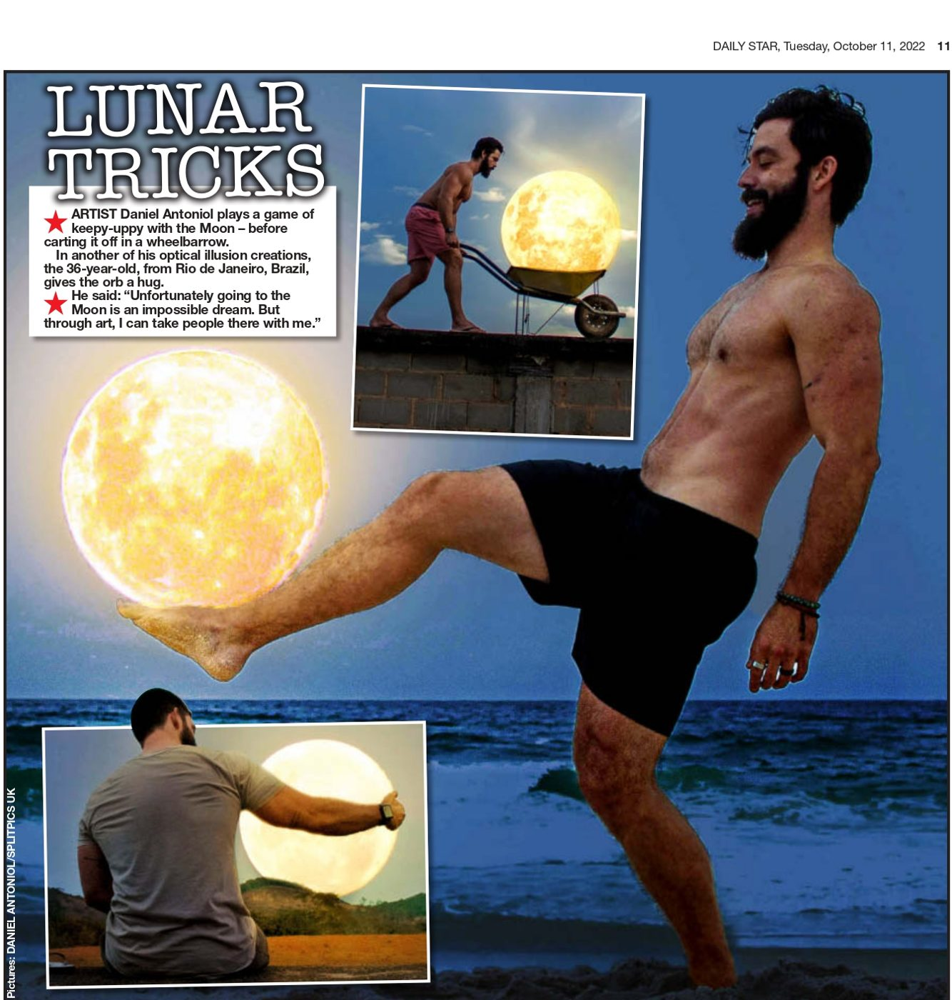

Fotografia da Lua, do céu e surrealismo · Rio de Janeiro
Fotografias surreais feitas com a Lua e o céu de verdade. Cada elemento é fotografado no local e depois combinado à mão. Sem IA.
Publicado no The Times, Metro e Daily Mirror Licenciado pela Sanitas (Suíça) e pela Localiza Compartilhado por páginas do Instagram com mais de 100 milhões de seguidores

Série Lua
Uma seleção de um acervo maior. Cada imagem tem um código: informe o código ao pedir uma licença.
Céu e surreal
Céus, nuvens e cenas impossíveis, feitas do mesmo jeito: fotografadas no local e combinadas à mão.
Acervo completo
Esta página mostra 34 imagens. O acervo completo tem mais de 120, nas duas séries, e cresce todo ano. Peça o catálogo completo.
Pedir o catálogoMétodo
Cada elemento é fotografado. Nada é gerado.
As ideias surgem caminhando pelo interior, olhando cenários e objetos do dia a dia. É a parte mais lenta do trabalho.
A cena é montada e fotografada sozinho, com tripé e timer. A Lua é fotografada no mesmo lugar, quase sempre nos primeiros minutos depois de nascer, quando parece maior.
As fotografias são combinadas e finalizadas à mão em uma única imagem. Toda licença informa que a imagem é uma composição fotográfica.
Sobre
Daniel é de Cataguases, em Minas Gerais, e mora no Rio de Janeiro. Começou a série em 2020, durante a pandemia, trabalhando remotamente na chácara dos pais, no interior, longe das luzes da cidade.
Ele trabalha sozinho: monta, fotografa e edita cada imagem, e o acervo cresce todo ano desde então. Além da série da Lua, faz imagens surreais de céu e paisagem.
“Ir à Lua é um sonho impossível. Mas, pela arte, eu consigo levar as pessoas até lá comigo.”Daniel Antoniol, Daily Star, 2022
Publicações e imprensa
Imprensa em mais de dez países desde 2022 e compartilhado por algumas das maiores páginas do Instagram. Abaixo: o livro de 2026 da Sanitas, na Suíça, e dois jornais britânicos de outubro de 2022.




Licenciamento